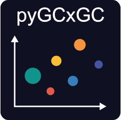

pyGCxGC¶

Overview¶
pyGCxGC is a python package for processing of two dimensional Gas Chromatography (GCxGC) data. Presently, it supports generating 2D chromatograms for detectors with one parameter, such as FID.


Features¶
- Load 1D Chromatograms from a csv or a pandas dataframe
- Generate 2D Chromatograms
- Integrate areas in 2D Chromatograms using .tif masks
- GUI for generation of masks
⚠️ WARNING: pyGCxGC is under active development. Braking changes can occur. Please report any issues using the Issue Tracker.
Installation¶
pyGCxGC is not yet available on PyPI. To install the latest development version, clone the repository and install it using pip:
in editable mode:
Note: The GUI functionality requires tkinter, which is included in most Python installations. If you're having issues with the GUI, ensure tkinter is installed on your system.
Documentation¶
Check the Development Notebook to get started, more in-depth docs to be developed.
Usage¶
Parsing and plotting¶
To generate a 2D chromatogram object, you need either a csv or padnas dataframe with the retention time in seconds ('Ret.Time[s]') and a column labeled 'Absolute Intensity'.
import pyGCxGC as gcgc
from matplotlib import pyplot as plt
chrom = gcgc.parse_2D_chromatogram(
'example_data/example_chromatograms/Example_FID.csv',
modulation_time=20,
sampling_interval='infer'
)
# Plot the 2D chromatogram
import matplotlib.pyplot as plt
plt.imshow(chrom.chrom_2D, cmap='viridis', extent=chrom.limits, aspect='auto')
plt.xlabel('Retention time 1 (min)')
plt.ylabel('Retention time 2 (s)')
plt.colorbar(label='intensity')
plt.show()
Integrating a specific area¶
To integrate a specific area, provide a binary mask as .tif file. You can also provide a directory with multiple masks.
# Integrate using a mask file
result = gcgc.integrate_masks(
chrom.chrom_2D,
masks='example_data/example_masks/Mask_1.tif'
)
print(result)
Creating Masks with the GUI¶
The package includes a graphical user interface for creating masks for 2D chromatograms.
The GUI allows you to load a chromatogram, draw regions of interest, and save them as binary mask files (.tif).
To launch the GUI from within Python:
You can also launch it directly from the command line:
The GUI provides tools to: - Load and visualize 2D chromatograms - Draw masks using selection tools - Add/remove selections to/from masks - Save masks as .tif files for later use with pyGCxGC's masking functions
For a detailed tutorial on using the Mask Creator GUI, see the Mask_Creator_GUI.ipynb notebook in the docs.
For a finer control of the masks, you can use image processing software such as ImageJ.